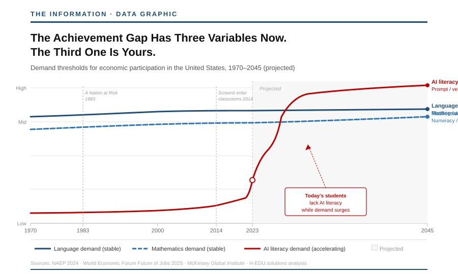

There is a $214 billion market growing at 38 percent annually sitting forty minutes from Sand Hill Road. It is the global education technology market, and Silicon Valley has been trying to crack it for twenty-five years with the wrong product, the wrong pitch, and the wrong theory of change. Every attempt has failed for the same reason: the valley arrived as a liberator and departed as a cautionary tale.
The pilot program that cracks this market has not been funded. It can be. The window to fund it — and to shape the AI policy framework California is writing right now — closes in 90 days.
This is not a social impact pitch. It is a market entry strategy dressed in a problem that happens to be civilizational.
Fifty Years. One Direction. Down.
California's public schools once ranked among the strongest in the nation. Today the state sits 38th in math and 33rd in reading on the National Assessment of Educational Progress. Half a century of reform, billions of dollars, and the most concentrated technology wealth in human history within driving distance — and the gap between California's highest- and lowest-performing students is not narrowing. It is widening, and it is accelerating.
This is not a failure of resources. California spent more than $23 billion in federal pandemic relief on K–12 education and has no reliable mechanism to tell you what it bought. It is not a failure of intention. The state convened a legislatively mandated AI in Education Workgroup this year with a comprehensive model policy due in July. It is not even, primarily, a failure of technology.
It is a failure of instrumentation. We have been flying a $100 billion system without a cockpit.
The Gap Was Never Two-Dimensional
The achievement gap has always been measured on two axes — language and mathematics. That framing served the industrial economy, where those two variables largely determined whether a child would participate in economic life or be excluded from it. The framing is now obsolete.
There is a third variable, and its absence from the gap definition is the most expensive oversight in American education policy. AI literacy — the ability to direct, interrogate, verify, and critically evaluate AI systems — is now as foundational to economic participation as reading was in 1970.
"A child who graduates unable to read is disqualified from the knowledge economy. A child who graduates unable to work with AI is disqualified from the economy that is replacing it."
The cruelty of this moment is that the third variable is, in principle, the most democratizing of the three. A child with fragile literacy can still learn to prompt. A child with shaky arithmetic can still learn to evaluate AI output critically. The same tools eliminating the entry-level jobs that historically absorbed underprepared workers are also — if deployed correctly — the most powerful tutoring and translation infrastructure ever built. The gap contains its own instrument of repair. We are simply not using it.

Source: NAEP 2024 • World Economic Forum Future of Jobs 2025 • McKinsey Global Institute • H-EDU.solutions
The Graveyard Silicon Valley Built
The valley has tried to solve this before. The record is not encouraging. Mark Zuckerberg's $100 million gift to Newark's schools produced nothing measurable. AltSchool burned through venture capital engineering a platform for the already-advantaged. Summit Schools scaled a model that worked for motivated students and had negligible purchase on the population that actually needs intervention. The pattern is consistent: arrive as a savior, optimize for engagement and retention, exit when the unit economics don't pencil. The district is left with a three-year contract, declining scores, and a hard lesson about the difference between disruption and improvement.
A Fortune investigation published this month adds a data point that should end the conversation about technology-as-pedagogy: the generation educated most heavily with classroom technology is the first in modern history to test below its parents. Screen time in classrooms correlates negatively with learning outcomes across the global PISA dataset. For a generation the valley told schools they were broken and that computers could fix them. The diagnosis was manufactured. The cure made the patient sicker.
This is why every prior approach failed — and why the next one, done correctly, wins precisely because the field has been cleared.
Arrogance
Perhaps you think we know it all. We don't.
Silicon Valley's relationship with education has been defined by a particular kind of confidence — the conviction that intelligence applied to a problem at sufficient velocity will produce a solution. It is the same confidence that built the iPhone, rewrote the taxi industry, and put a supercomputer in every pocket. It is also the confidence that built personalized learning platforms no teacher asked for, deployed tablets as a substitute for instruction, and mistook engagement metrics for evidence of learning.
We are fascinated by technology. We believe, genuinely, that there are new ways to fulfill the American Dream — ways that could not have existed before the tools we now hold. But fascination is not a business plan, and belief is not a feedback loop.
One component of success that every founder eventually learns — and that no algorithm has yet replicated — is patience. The discipline of moving forward only when prior steps have proved successful, or at minimum instructive. Not the patience of waiting. The patience of listening. Of reading the water before you commit to a heading.
Part of our business fabric is introspection. We ask, regularly, what we do not know. We deploy sea anchors when the seas demand it — not because we have lost confidence in the destination, but because arriving requires surviving the passage.
No AI is capable of that judgment. No model can tell you when to hold position and when to run. That requires a human being who has been wrong before and learned something from it.
The history of Silicon Valley in education is a history of people who had never been wrong in their own domain entering a domain where they had no scar tissue. The children paid for that arrogance. The teachers absorbed it. The districts signed the contracts and watched the pilots expire.
We are not coming to education with that posture. We are coming with instruments, a verification system that tells us when we are wrong, and the humility to let the data speak before the damage compounds. That is not a limitation. That is the design.
The Ask That Has Never Been Made
Silicon Valley is the best infrastructure builder on earth. What it cannot do — and what decades of evidence confirms it should not attempt — is replace the relationship between a child and a teacher who knows their name. The ask that has always failed is "fix education." The ask that has never been made is: build the infrastructure for the people who do.
That instrument panel exists. Real-time language translation that removes the barrier facing California's 1.1 million English learners without touching a single curriculum. An MCP-native data layer connecting assessment results to intervention records to observable outcomes in a closed feedback loop — so that when a district spends $4 million on a literacy program, someone can tell you in 90 days whether it is working. A parent-observer interface, available in every home language, capturing the behavioral signals no teacher ever sees: the child who stopped talking about school, who has gone quiet, who is sleeping through mornings. AI tutoring deployed as supplemental acceleration — because AI tutoring works best when a learner brings foundational knowledge to the interaction, not when the machine is trying to create it.
None of these are pedagogy. All of them are engineering. That is the lane.
The Supply Chain Argument No VC Has Made
Here is the economic case stated plainly.
Google, Apple, Salesforce, and every major employer headquartered between San Jose and San Francisco will face a structural talent shortage within a decade if the bottom 60 percent of California's students remain functionally underprepared for an AI-driven labor market. The pipeline runs through Compton and Fresno and East Salinas. The engineers who will build the next generation of AI systems are sitting in classrooms right now where 75 percent of their peers cannot meet grade-level math standards.
This is not a social justice argument, though it is that too. It is a supply chain argument. The workforce Silicon Valley needs to remain competitive is being assembled right now in classrooms it has largely ignored.
The Cockpit
The instrument panel does not fly the rocket. It gives the people who do the data they need to fly it well. Apollo Mission Control did not go to the moon. Twelve men did — because 400,000 engineers built the system that told them exactly where they were, in real time, with enough precision to save their lives when things went wrong.
"California's teachers are not the problem. They are the astronauts. They are performing the most consequential work in the state with the least reliable instrumentation of any high-stakes profession in existence."
A surgeon has real-time vital signs. A pilot has a cockpit. A portfolio manager has a Bloomberg terminal. A third-grade teacher in Watts has last year's standardized test scores and her own best judgment.
Build them the cockpit.
What a Pilot Looks Like — and What It Returns
A proof-of-concept pilot requires four things: three to five California school districts representing genuine demographic diversity, an 18-month runway, a closed-loop verification system that measures outcomes against interventions in near real time, and a commitment from participating districts to share the data. The investment required is in the range of what this readership spends on a Series A due diligence process.
What it returns is not goodwill. It is the evidence base that unlocks that market, positions the funder as the architect of the California policy framework being written right now, and produces a replicable model deployable in every state facing the same crisis — which is all of them. The EdTech market has never rewarded a product that could demonstrate, with hard data, that it actually closed the gap. That product has not existed because no one built the verification layer. The verification layer now exists. It is called VERA. It lives at H-EDU.solutions.
The window to shape that vocabulary closes in 90 days.
The vocabulary established in that document will govern procurement across 1,000 school districts for the next decade. The window to shape that vocabulary — as a funder, as a partner, as the company whose infrastructure becomes the standard — is 90 days.
After July, you will be a vendor. Before July, you can be a founder.
♦ ♦ ♦